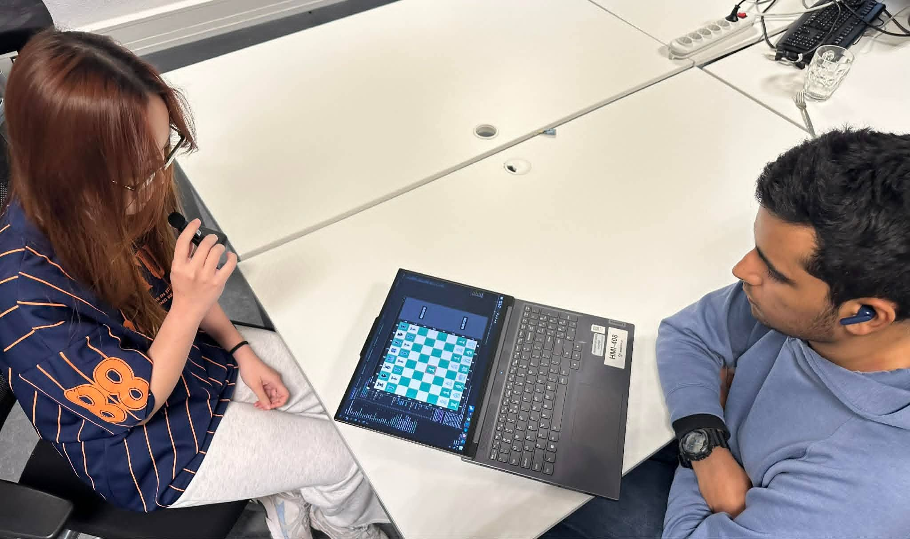
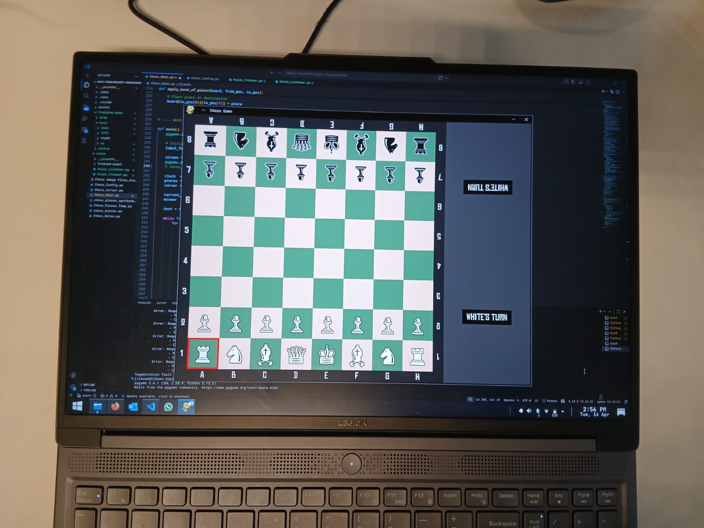

Voice-based Chess
I co-designed and co-developed a voice-controlled chess game, combining a classic pygame-based chess interface with real-time speech recognition. Rather than relying solely on keyboard input or traditional voice commands used to play chess (e.g. "Knight to E6"), the game is primarily played using six spoken commands (up, down, left, right, pickup, drop) that move the cursor and control piece selection, alongside full keyboard support as a fallback. The project explores how lightweight, locally-run voice interfaces can be integrated into interactive applications without depending on cloud-based speech APIs.
The system is built around a custom-trained CNN for keyword spotting, which listens for short audio clips and classifies them into one of the six commands in real time. Recognised commands are then mapped directly to in-game cursor actions. The chess engine itself, covering move validation, turn logic and game state, was developed and refined independently before voice integration was layered on top, resulting in a modular, well-organised codebase.

